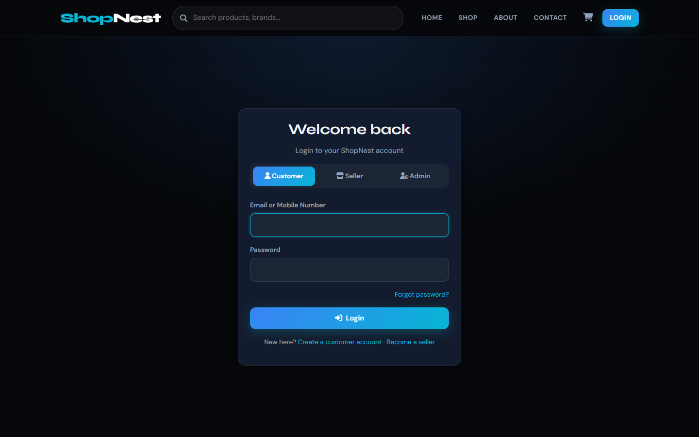
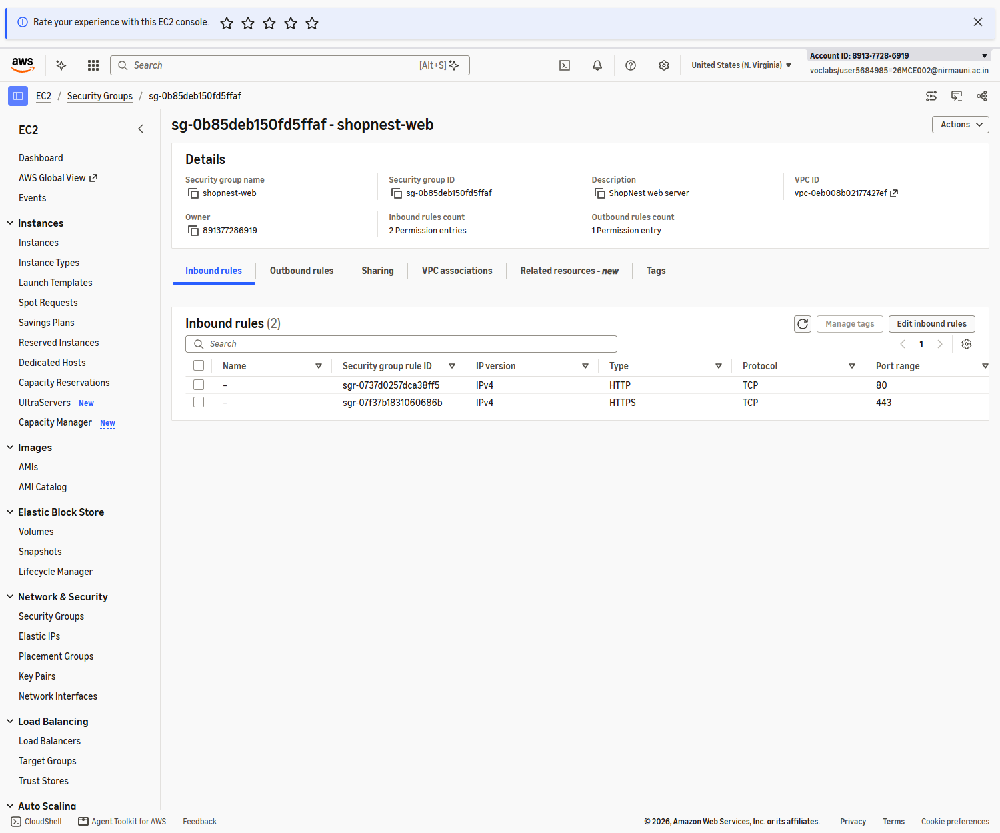
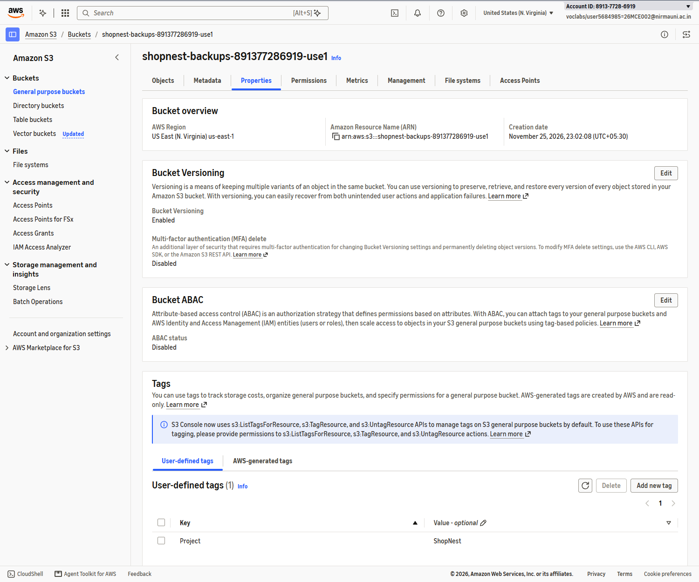
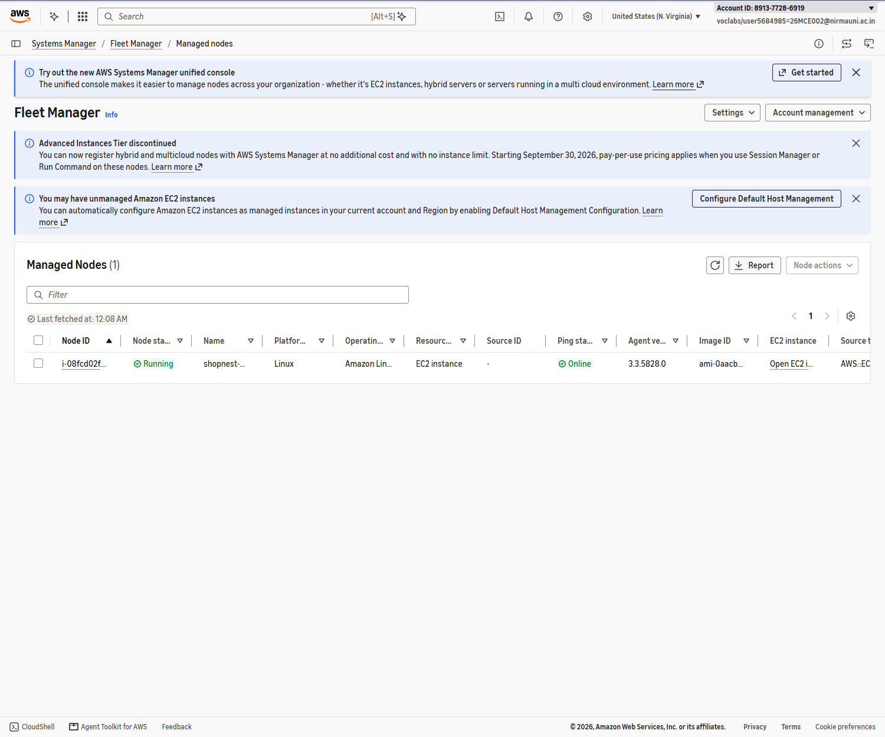
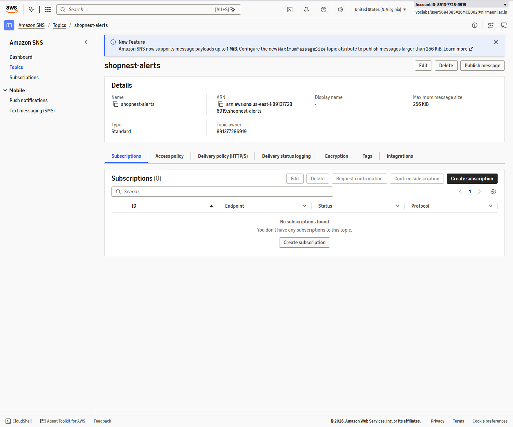
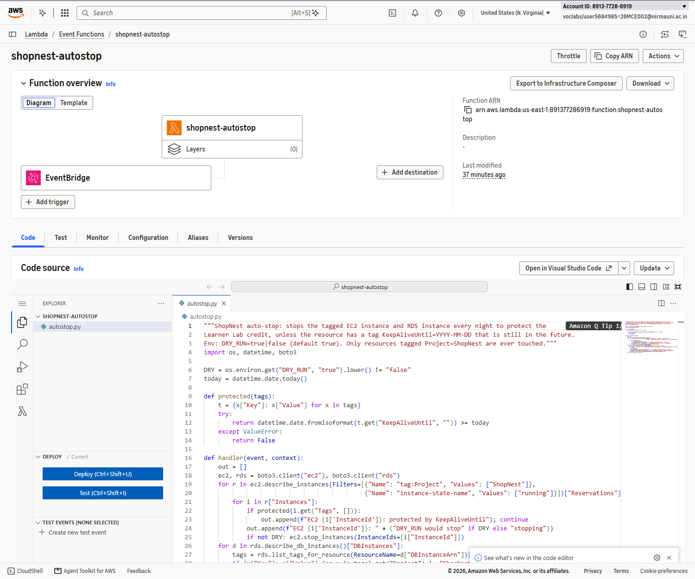

shopnest-web (t3.micro) is running with Elastic IP 52.23.26.212, IAM role LabRole and IMDSv2 required. It hosts the Docker containers. VerifiedCloud Deployment Project Report
Cloud generation, services, CI/CD, costing, security and SLA
[STUDENT NAME(S)] | [ENROLLMENT NO.(S)] | [COURSE CODE] | [UNIVERSITY]
Cloud: Amazon Web Services (AWS Academy Learner Lab), region us-east-1 (N. Virginia)
Live site: http://52.23.26.212/ (HTTP only, demo accounts)
Source code: https://github.com/davebhargav-20/shopnest (branch aws/cloud-deploy)
Date: 26 November 2026
Every statement is tagged: Verified Implemented, not tested Designed only Not done. Console screenshots show the AWS account ID and user name, as required.
ShopNest, a multi-vendor e-commerce website (PHP 8 + MySQL), was hosted on AWS. A Docker container behind a Caddy proxy runs on an EC2 instance and talks over TLS to a private, encrypted RDS MySQL database. Backups go to an encrypted S3 bucket, logs and alarms go to CloudWatch, and a Lambda stops the resources every night to protect the lab credit. A GitHub Actions pipeline tests, builds and scans every commit, and the server deploys a commit only after CI has passed for exactly that commit, with automatic rollback.
| Requirement | Result |
|---|---|
| Web application hosted online and attached to the cloud | Verified http://52.23.26.212/ answers; /health.php reports db up |
| Cloud generation / provisioning | Verified repeatable boto3 scripts in infra/learnerlab/ (Terraform kept as design only) |
| Cloud service usage | Verified EC2, EBS, VPC/SG, RDS, S3, SSM, CloudWatch, SNS, Lambda, EventBridge, CloudTrail |
| CI/CD | Verified three live proofs: auto-deploy, failed CI refused, unhealthy release rolled back |
| Costing | Verified estimate about USD 28/month if run 24/7; real spend not yet known |
| Security | Verified network, TLS to DB, encryption. Gaps: HTTP only, weak forgot-password, no least-privilege IAM |
| SLA | Verified separate PDF; no long-term uptime data exists yet |
ShopNest is a multi-vendor marketplace with three roles. Customers browse, search, filter and sort products, keep a cart (a guest cart survives login), use a wishlist, check out with Cash on Delivery or a demo online payment, track orders (Pending, Confirmed, Shipped, Delivered), cancel (stock is restored) and review products after delivery. Sellers register a shop that the admin must approve, manage products with image upload, receive orders, update item status and view a sales report. The admin approves, rejects or blocks sellers, manages categories, products, orders, customers and enquiries, edits the About and Contact pages and runs reports.
| Layer | Technology |
|---|---|
| Application | PHP 8.3, mysqli with prepared statements, bcrypt password hashes, CSRF tokens, validated image uploads (JPG/PNG/GIF/WEBP up to 2 MB) |
| Database | MySQL (RDS 8.4.11), 11 tables, demo data |
| Front end | HTML, CSS, JavaScript, Font Awesome, responsive dark UI |
| Packaging | Docker (php:8.3-apache), Docker Compose, Caddy 2 reverse proxy |
| Cloud | AWS us-east-1; CI on GitHub Actions |

One small EC2 instance keeps cost low and is enough for a class demo. The database is a managed RDS instance so that backups, encryption and patching are handled by AWS. The instance is administered through Systems Manager, so SSH is closed. The application image is built on the server from a commit that already passed CI, so no registry credential and no AWS secret are stored in GitHub.
| Service | Why not |
|---|---|
| NAT gateway (about USD 33/month), ALB (about USD 16/month) | not needed for one instance; cost |
| Multi-AZ RDS | doubles database cost; availability target is class-demo level |
| WAF, Auto Scaling, CloudFront | cost; designed only |
| Route 53 / ACM / HTTPS | no domain available |
| IAM roles / OIDC / AWS Budgets | not allowed in AWS Academy Learner Lab |
| ECR registry | replaced by building on the server; kept as design in infra/*.tf |
The account is an AWS Academy Learner Lab (role voclabs): region ap-south-1 (used by the original Terraform) is refused, and IAM roles and OIDC providers cannot be created. The original Terraform therefore could not be applied. The infrastructure was created with small, repeatable boto3 scripts that reuse what already existed, and nothing was deleted.
| Script | Creates / changes | Status |
|---|---|---|
01_foundation.py | S3 backup bucket (SSE, versioning, public-access block, TLS-only, 30-day lifecycle), SNS topic, 3 log groups, SSM SecureString for the DB password, starts the existing RDS | Verified |
02_rds_harden.py | Existing RDS: password from SSM, TLS-only parameter group, deletion protection, tags, log exports (data untouched) | Verified |
03_compute.py | EC2 t3.micro (AL2023, encrypted gp3, IMDSv2), Elastic IP, bootstrap of Docker and the deploy timer | Verified |
04_ops.py | Closes SSH, 5 CloudWatch alarms, KeepAliveUntil tags, Lambda auto-stop, EventBridge schedule | Verified |
05/06 restore scripts | Disaster-recovery rehearsal with a temporary RDS copy | Implemented, not tested |
All resources carry the tag Project=ShopNest. The scripts are idempotent and read AWS credentials only from environment variables. Existing resources that were reused: RDS shopnest-db (MySQL 8.4, created earlier by a team member) and security groups shopnest-web and shopnest-db.
trivy-action@0.28.0 no longer exists; Windows git converted entrypoint.sh to CRLF line endings, which crashed the container (fixed with .gitattributes).| Service | Role in ShopNest | Approx. cost/month (USD) |
|---|---|---|
| EC2 t3.micro | runs Docker (Caddy + app) | 7.59 |
| EBS gp3 20 GB (encrypted) | OS, uploads | 1.60 |
| VPC / security groups | network isolation (default VPC) | free |
| RDS MySQL db.t3.micro | database, private, encrypted, TLS-only | 12.41 + 2.30 storage |
| Elastic IP | stable public address | 3.65 |
| S3 | encrypted backups | about 0.05 |
| Systems Manager | Run Command (no SSH), Parameter Store secret | free |
| CloudWatch + SNS | logs, 5 alarms, alert topic | 0.50 |
| Lambda + EventBridge | nightly auto-stop | about 0 |
| CloudTrail (event history) | audit trail of API calls | free |
Total about USD 28/month if everything runs 24/7 (list-price estimate, see section 8).
shopnest-web (t3.micro) is running with Elastic IP 52.23.26.212, IAM role LabRole and IMDSv2 required. It hosts the Docker containers. Verified
shopnest-web. Only HTTP and HTTPS rules remain; the SSH rule that existed was removed. Systems Manager is used for administration instead. Verified

shopnest-eip keeps the public address stable across stop and start. It costs about USD 0.005 per hour, even when the instance is stopped. Verified
shopnest-db, MySQL community edition, db.t3.micro in us-east-1a, status Available. The database is not publicly accessible and is only reachable from the web security group. Verified
shopnest-manual-pre-demo (MySQL 8.4.11) was taken before risky work and was used for the restore rehearsal. Automated backups are kept for 7 days. Verified

shopnest-backups-891377286919-use1 has versioning enabled and a Project tag; default encryption is SSE-S3. Verified
aws:SecureTransport = false). Verified
backup.sh (about 5 KB, gzip) in the db/ prefix. A copy was also saved on the owner's PC. Verified

/shopnest/db_password is a SecureString; only its name is shown. The EC2 instance reads it at boot to build the container environment. Verified

/shopnest/app with stream app receives the container logs through the awslogs driver; retention is two weeks. Verified
shopnest-alerts exists, but no subscription is configured yet, so no alert e-mail can be delivered. Notification test: Not done
shopnest-autostop (Python, 256 MB) stops tagged EC2 and RDS resources unless a KeepAliveUntil tag protects them. A dry run listed both as protected Verified; actual stopping: Implemented, not tested
shopnest-autostop-nightly runs at 18:30 UTC (midnight IST) and calls the Lambda. The next trigger dates are listed. Verified
The image is based on php:8.3-apache with mysqli, the Amazon RDS CA bundle, production php.ini (errors logged, not displayed) and Apache security headers. A HEALTHCHECK calls /health.php. The entrypoint imports ecomdb.sql only when the table tbladmin does not exist, so it never overwrites data.
| Check | Result |
|---|---|
| Build and run locally with Docker Compose | healthy; image 816 MB Verified |
| 68 functional checks (customer, seller, admin) | 68 PASS, 0 FAILS Verified |
Apache workers run as www-data | yes (master process is root, as usual) Verified |
| No infra, tests, .git or .env inside the image | confirmed Verified |
| No secret in image history | confirmed Verified |
Uploads on a host folder (EBS), PHP disabled in images/ | configured Implemented, not tested (persistence across restart not tested) |
| Production limits and restart policy | 512 MB app, 128 MB proxy, restart: unless-stopped Verified |
Why pull-based. The Learner Lab cannot create an OIDC provider, and its credentials expire every few hours, so GitHub cannot deploy into AWS. The server pulls instead, and GitHub stores no AWS secret.
| Stage | What it does |
|---|---|
| Lint | PHP syntax check, gitleaks secret scan, Terraform fmt/validate |
| Test | MariaDB service, tests/e2e.py (68 checks) |
| Build | hadolint, docker build, Trivy 0.76.2 (fail on CRITICAL), container smoke test (healthy, www-data, no infra in image) |
| Gate | server asks GitHub: run for this commit is completed:success? otherwise skip (fail closed) |
| Deploy | build on the server, swap containers, restart proxy, health check must show the new version |
| Rollback | on failed health check restore the previous image and remember the bad commit |
| Proof | Observed |
|---|---|
| (a) green CI deploys automatically | version changed 1e6e07449b44 to aa34984d808c Verified |
| (b) failing CI is not deployed | broken commit 0aeeb73: SKIP ... completed:failure; live version unchanged Verified |
| (c) unhealthy release is rolled back | commit 37706c3 (fails only in production): UNHEALTHY 18:20:07, ROLLED BACK (healthy) 18:20:14 Verified |
Freeze with AUTO_DEPLOY=false | Implemented, not tested |
aws/cloud-deploy until the pull request is merged, then main). The image is built on a 1 GB instance, and Trivy scans the CI build of the same commit rather than the server build. Unauthenticated GitHub API calls are limited to 60 per hour per IP. About two minutes of unhealthy traffic are possible before a rollback completes. No GitHub Actions screenshot was captured; the evidence is the public run history at github.com/davebhargav-20/shopnest/actions and the server log in docs/evidence/.Region us-east-1, USD, 730 hours per month. Prices are list-price estimates from AWS documentation, not re-verified against the price-list API.
| Resource | Unit price | Per month |
|---|---|---|
| EC2 t3.micro | $0.0104/h | 7.59 |
| EBS gp3 20 GB | $0.08/GB-month | 1.60 |
| RDS db.t3.micro single-AZ | $0.017/h | 12.41 |
| RDS storage 20 GB | $0.115/GB-month | 2.30 |
| Public IPv4 / Elastic IP | $0.005/h | 3.65 |
| CloudWatch alarms x5 | $0.10 each | 0.50 |
| S3, SNS, Lambda, SSM, EventBridge | free tier / pennies | 0.05 |
| Total 24/7 | about $0.037/h | about 28.1 (0.93 per day) |
| Scenario | Estimate/month |
|---|---|
| 24/7 | about $28 |
| Business hours (10 h x 22 days) | about $14 to $18 |
| Demo weekend (2 days) | about $1.9 plus fixed items |
| Everything stopped (EBS, RDS storage, snapshots, Elastic IP remain) | about $7 to $8 |
| Forgotten running | $0.93 per day; RDS stopped for 7 days restarts automatically |
Rejected options: NAT gateway (about $33), ALB (about $16 plus usage), Multi-AZ RDS (double), WAF. With a USD 50 credit, 24/7 operation lasts about 53 days; the nightly auto-stop extends it. Actual consumption: Cost Explorer showed about USD 0.00 for the earlier period and lags 24 hours, so today's real spend is unknown. Record it: Credit remaining on ____ : $____.
| Control | Status | Evidence / gap |
|---|---|---|
| Only port 80 public; SSH closed; DB port not exposed | Verified | port probe from the internet: 22, 443, 3306 and the RDS endpoint unreachable |
| RDS private, encrypted, 7-day backups, deletion protection | Verified | console and API |
| TLS enforced to RDS | Verified | plain connection refused (ERROR 3159); TLS 1.3 accepted |
| DB password only in SSM Parameter Store | Verified | also in /opt/shopnest/.env (mode 600) on the server |
| EC2 IMDSv2, encrypted volume, no key pair | Verified | OS patching is manual |
| S3 hardening (SSE, versioning, public block, TLS-only, lifecycle) | Verified | figures on S3 |
| CI scans: gitleaks, hadolint, Trivy | Verified | CRITICAL only |
| Security headers, HttpOnly + SameSite cookies | Verified | Secure flag needs HTTPS |
| Alarms to SNS e-mail | Not done | no subscriber, so no notification was tested |
| Least-privilege IAM | Not done | Learner Lab allows only LabRole |
| HTTPS | Not done | no domain: passwords cross the internet unencrypted; use demo accounts only |
| Forgot-password flow | known weakness | resets any account, including admin, with e-mail + mobile only |
| Public demo credentials in README | open | change the admin password before real use |
| Item | Result |
|---|---|
| Automated RDS backups | 7 days, point-in-time Verified |
| Manual snapshot | shopnest-manual-pre-demo Verified |
| Backup to S3 (database dump + uploads) | one run verified; nightly cron not observed Verified |
| Copy outside AWS | saved on the owner's PC Verified |
| Restore into a new instance | available after 7.3 minutes (measured RTO) Verified |
| Row counts compared with production | script failed, credentials expired Not done |
| RPO | point-in-time about 5 minutes (AWS documentation, not measured); nightly dump up to 24 h |
Procedures for server loss, bad deploy, database corruption and lab reset are in docs/BACKUP_AND_DR.md. The temporary restore instance still has to be deleted.
The full SLA is in ShopNest_SLA.pdf. Summary: AWS documents 99.5 % for a single EC2 instance and for single-AZ RDS (credits only, and not available in the Learner Lab). ShopNest sets targets only for demo hours; the measured results are a restore time of 7.3 minutes, a rollback within about 2 minutes of a bad release and a fresh server serving traffic about 6 minutes after launch. No long-term uptime has been measured.
| Test | Result | Status |
|---|---|---|
| Local e2e | 68 PASS, 0 FAILS | Verified |
| CI on GitHub | green on 3 commits, red on the deliberate failure | Verified |
| Live health, ports, TLS | as in section 9 | Verified |
| CD proofs a, b, c | all observed | Verified |
| Auto-stop Lambda | dry run only; never stopped anything | Implemented, not tested |
| Users | Page | Req/s | p50 | p95 | p99 | Failed | CPU |
|---|---|---|---|---|---|---|---|
| 50 | /index.php | 231 | 203 ms | 327 ms | 441 ms | 0 | 44 % |
| 100 | /product-details.php?id=1 | 371 | 268 ms | 303 ms | 319 ms | 0 | 28 % |
| 100 | /index.php | 49 | 229 ms | 10,024 ms | 19,637 ms | 83 | 7 % |
| other runs | /shop.php etc. | no data |
SITE_ADDRESS to the domain so Caddy obtains a certificate.ShopNest runs on AWS with a private, encrypted, TLS-only database, a hardened network, backups, monitoring, cost control and a CI/CD pipeline whose safety properties were demonstrated live. Several items are explicitly incomplete (HTTPS, alert e-mail, load test, restore data comparison), and they are listed rather than hidden.
| Term | Meaning |
|---|---|
| EC2 | virtual server |
| RDS | managed database |
| SSM | Systems Manager: run commands and keep secrets without SSH |
| CI/CD | automatic testing and deployment |
| RTO / RPO | time to recover / data that can be lost |
| Pull-based CD | the server fetches and deploys, instead of being pushed to |
Reproduce: export Learner Lab credentials, then run infra/learnerlab/01_foundation.py to 04_ops.py in order; 03_compute.py aws/cloud-deploy launches the server. Local: docker compose up -d --build, then python tests/e2e.py. The runbook and demo guide are in docs/.
| Likely question | Short answer |
|---|---|
| Why not Terraform? | the lab forbids IAM/OIDC and ap-south-1; Terraform is kept as the design |
| Why pull-based CD? | credentials expire in hours; no AWS secret stored in GitHub |
| Is it secure? | mostly; the main gaps are HTTP only and the weak forgot-password flow |
| What if the server dies? | re-run the scripts (about 6 minutes); data is in RDS and the backups |
| What did not work? | load test inconclusive; restored-data comparison not completed |